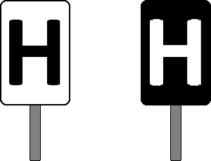
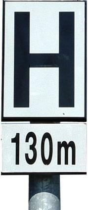

Signalbuch-Online
Signal Ne 5 - Haltetafel
Informationen und Vorschriften rund um das Signal Ne 5 (Haltetafel) für die Bahnausbildung.
(1) Bedeutung
Kennzeichnung des Halteplatzes der Zugspitze bei planmäßig haltenden Zügen.(2) Beschreibung
Eine hochstehende weiße Rechteckscheibe mit schwarzem Rand und schwarzem H oder eine hochstehende schwarze Rechteckscheibe mit weißem H.
(3) Abweichende Aufstellung
Das Signal kann abweichend der geltenden Regeln aufgestellt sein. Diese Abweichungen werden nicht gesondert bekannt gegeben.(4) Reisezüge mit Verkehrshalt
Reisezüge mit Verkehrshalt haben an der Haltetafel zu halten. Ist die Haltetafel hinter dem Bahnsteig aufgestellt, hat ein Reisezug so zu halten, dass der erste Wagen des Zuges nicht über den Bahnsteig hinaus steht.Wo das Halten der Züge auf die Zuglänge abgestimmt werden soll, können Haltetafeln durch Zusatzschilder mit entsprechender Längenangabe ergänzt sein.

In diesem Fall ist an der Haltetafel anzuhalten, an der die angegebene Länge gleich oder erstmals größer als die Zuglänge ist spätestens an der Haltetafel ohne Zusatzschild.
Bahnhöfe ohne Ausfahrsignal
Auf Bahnhöfen ohne Ausfahrsignal haben haltende Züge (auch Güterzüge) an der Haltetafel zu halten. Reisezüge jedoch am Bahnsteig auch wenn am Bahnsteig keine Haltetafel aufgestellt ist.
Das Eisenbahnverkehrsunternehmen darf eine andere Haltetafel bestimmen, die nicht der Zuglänge entspricht, sofern sich bei besetzen Reisezügen alle Einstiegstüren am Bahnsteig befinden.
(5) Beleuchtung
Das Signal ist rückstrahlend oder beleuchtet, wenn der Betrieb es erfordert.(5) Bedarfshalt
Durch eine hochstehende, schwarze Rechteckscheibe mit weiß blinkendem "H" kann die Anforderung eines Bedarfshaltes angezeigt werden.